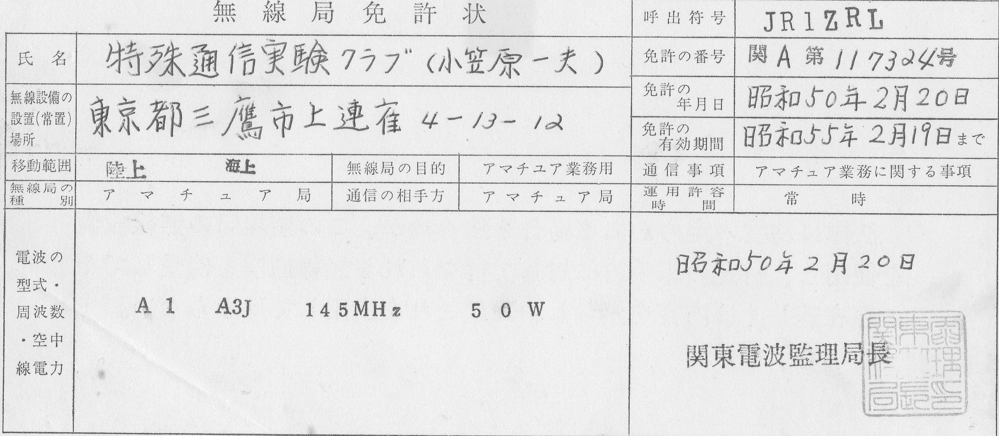
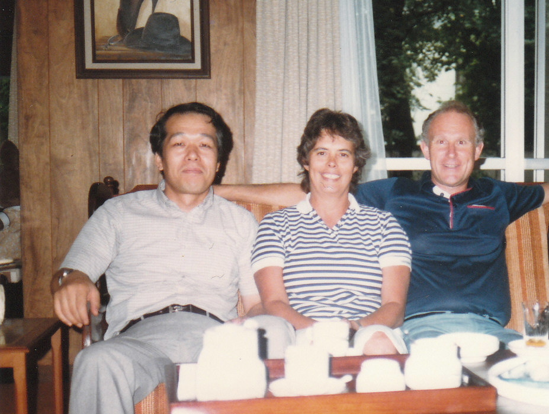
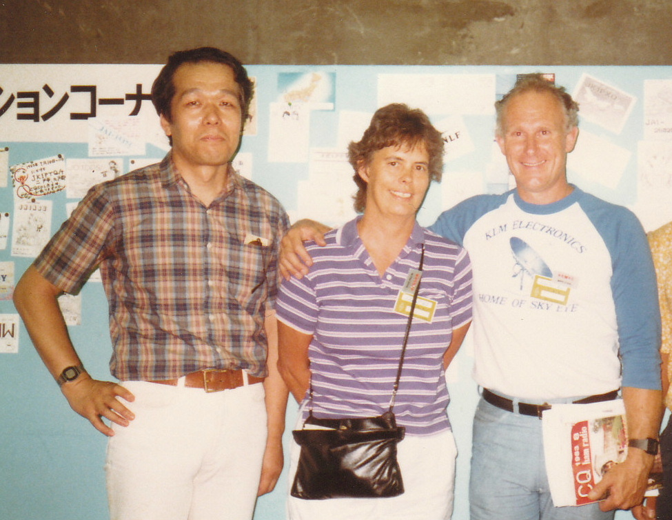
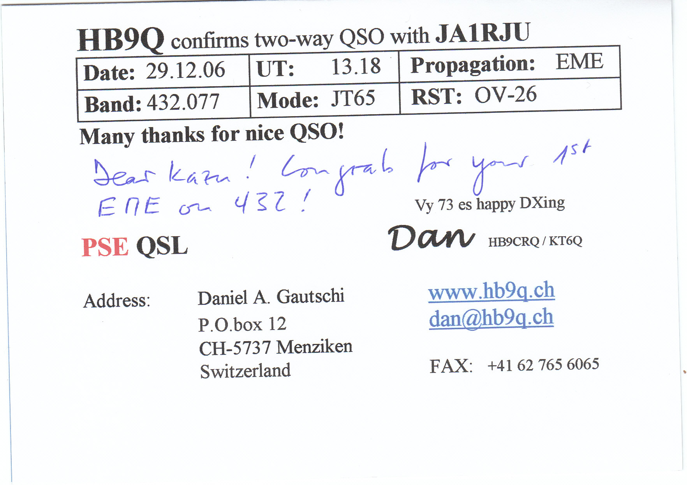
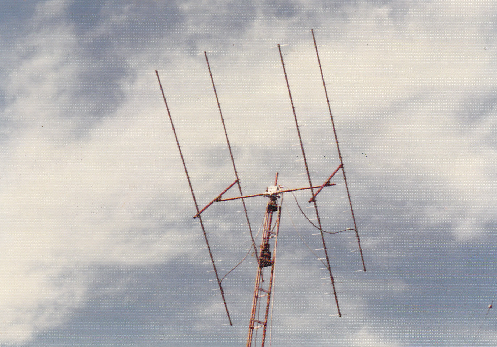
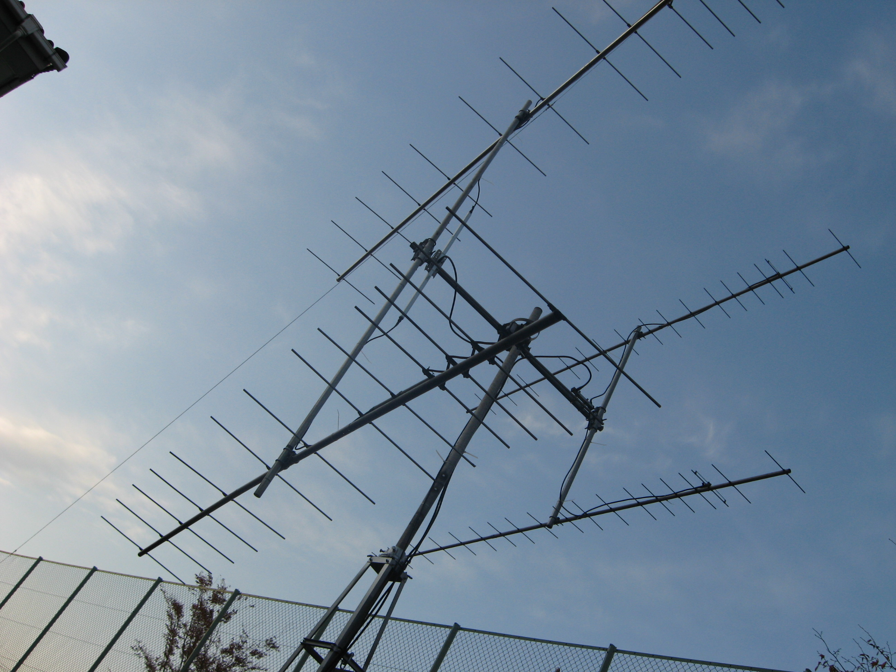
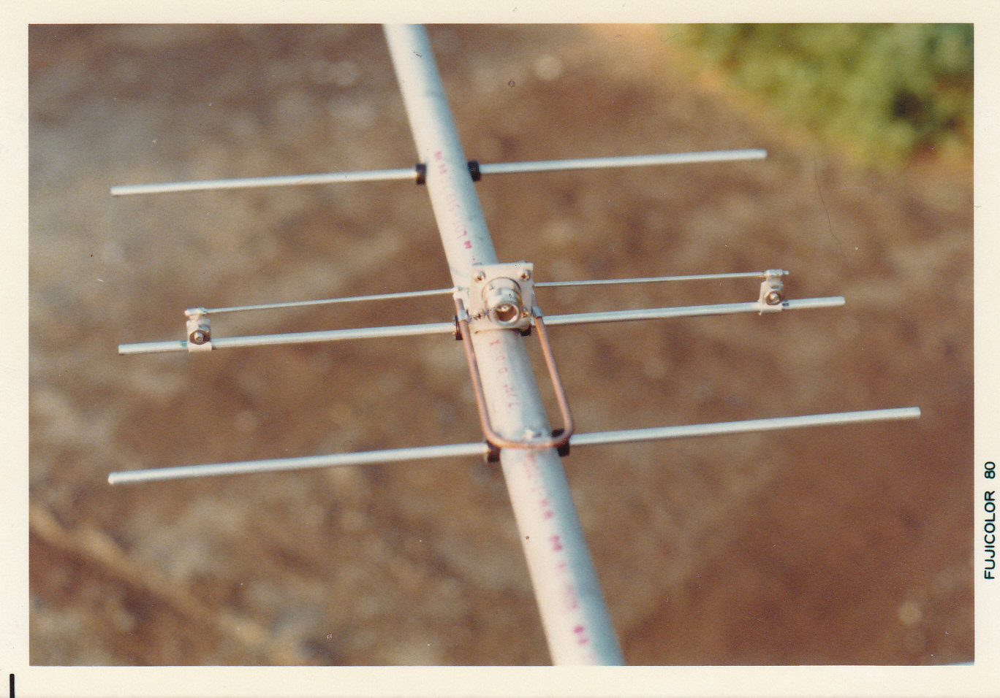
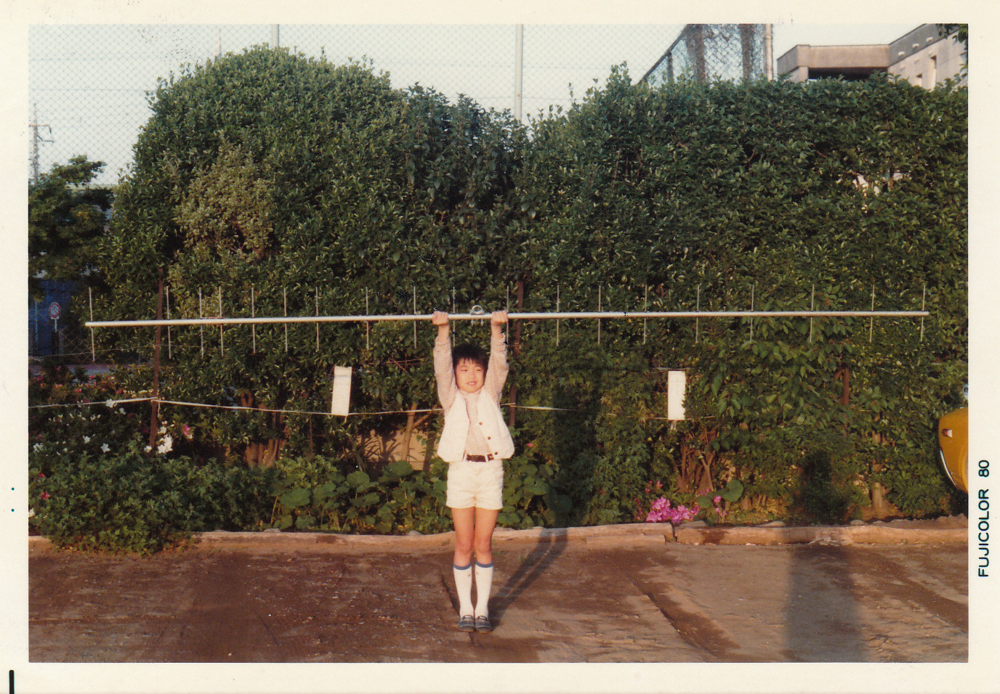

◎EMEはスタンフォード大学のWA6LETから始まった
この三鷹市のシャックでは、昭和50年(1975年)当時に144MHzのEMEに挑戦すべく、免許申請から設備集めなどを真剣に考えた時期もありました。
昭和50(1975年)年1月13日付けで、米国・カリフォルニア州のSRI(Stanford Research Institute) Radio Clubからの呼びかけで、
プロ用の150feetのDish ANTを使い、スタンフォード大学のWA6LETのコールサインで144 & 432MHz帯でのEMEテスト運用を行うとの連絡があった時です。
当時の日本では、特別に許可を得た免許を除きVHF/UHFでは通常10W(最大50W)の免許でした。
CWによる50Wの運用ではEMEでの2WAYのQSOは困難だったため、JA側でテストへ参加した局は144/432MHzとも受信で対応することになりました。
われわれも有志を募り、グループで144MHz帯にトライする事になったのです。
1975年2月20日～23日にかけて行われたテストに参加するため、グループは北米方面への立地条件の良い千葉県一宮町に移動することにしました。
2WAY QSOは無理としながらも、50Wの移動局(当時は10Wを超える免許には検査が必要だった)のJR1ZRL(特殊通信実験クラブ)のコールサインを急遽取得して、
対応しました。
実験に参加した2月22日は、関東地方では珍しく大雪でした。
トラックに機材を積んで雪道をようやくたどり着いた現地の建物の屋上に、10ELX2のアンテナを雪のチラツく夕刻になって設置、
月の昇る北東の空に向け耳を傾けたのですが、残念ながら受信は出来ませんでした。
◎EMEのQSOを"夢みて"
この実験を機に、144MHzの2WAYのEME・QSOを目指してJR1ZRLは、500Wの特別局申請を行うなど、本格的な活動を始めたのです。
設置場所は、まだ空き地の多かった東京・三鷹市の現在のシャックでした。
設備などは、米国・KLM社の当時の経営者(副社長)だったK6MYC(Mike)が、来日した際に「EMEに挑戦するなら...」と帰国後に送ってくれた、
同社の144MHz帯の14ELアンテナを参考に、製作したアンテナ8本(4列2段)という設計でした。

1950年に144MHz EME・テストのために申請したクラブ局・JR1ZRL
当時は50Wを超える「特別免許」の取り扱いは地方電波管理局ではなく本省での"決済(指示)"での免許だったため、
アンテナ設置方法や操作方法、業務局への影響の有無の調査など、規制が厳しく、九州や北陸では免許されていたにもかかわらず、、
関東管内での免許は、周辺に業務局が多すぎ"障害"が発生する可能性が多いとの判断からなかなか許可されませんでした。
加えて、昭和51年(1976年)1月1日付けで施行された、アマチュア無線による宇宙通信の業務が電波法令上、
「アマチュア業務」の他に宇宙通信の業務を合わせて行うために「通信事項の変更」の手続きを必要とするなどの省令改正があり、
改正前に提出してあったJR1ZRLの申請書の処理は宙に浮いてしまいました。
JR1ZRLの「50W固定局」の定期検査だけは、隔年(2年)できっちり行われる中、昭和55年までの5年間の免許期間中に再申請していないため、
JR1ZRLの「500W特別局」の申請所類は返還されること無く放置され、免許も期限切れとなってしまったのです。
開局時に144MHzのEME局でのQSOのみを目的に免許申請した「JR1ZRL」は、開局以来、ログにはQSO局が一行も書き込まれないまま終了。
結局、関東地区での"初のEME特別免許"は日の目を見ることなく"お蔵入り"となってしまいましたが、
「アマチュア局は安易に電力を求めるのでは無く、アンテナなどの技術的な面を研究しなさい...」と、
定期検査の度に"言い訳け"をしていた、電波検査官(技官)の言葉は、今にして思えば的を得ていたのかも知れない！？。


三鷹市のシャックを訪問してくれた、K6MYC・Mikeのアドバイスを受けEMEに挑戦
右は晴海で開催されていたハムフェアの「SMIRK」のブースに奥さん連れで来てくれた。
K6MYC・MikeとEMEで2WAYのQSOが出来たのは、結局、2004年に正式に50MHzでもEMEが割り当てられてから一年後の、
2005年6月13日の霞ヶ浦で運用した50MHzバンドでした。
まだ、144MHzの本格的なQRVが出来ない現在、三鷹市(日本本土)からの2WAY・QSOは出来ていませんが、
2007年2月にDX0JP(Philippnes Spratry Island)のDX-Peditionで運用した際に144MHzでQSO出来ています。
◎50Wで432MHzのEMEにもトライ


432MHzの初QSOはスイスのHB9Q
144MHz帯に比べ、432MHzのEMEにQRVしている局は144MHzに比べ極端に少ないのが現状です。
432MHzは多素子のアンテナでも小型で工作は楽になるのですが、UHF帯ともなると高出力の出力アンプやアンテナ、
同軸、リレーなど部品の入手、工作が難しいのであまり歓迎されないのでしょう。
50W程度のQRPのEMEでトライしても相手も少なく、三鷹市の設備でQSO出来たのはHB9Qだけです。
それも、相手のHB9Q側のアンテナが利得のある15.28mのDishを使ってくれた時だけという、限られた条件でのQSOです。
432MHz帯で使用しているアンテナは、米国製の「K2RIW」の21EL・4本(写真)です。
これは1978年頃に購入したものですが、このアンテナを使って、
福岡県久留米市から432MHzのEMEにQRVしていたJA6CZD・森さんのCWの信号を聞いた実績があります。
4本組で使っていた当時はサテライト用に愛用していましたが、サテライト用にはゲインが有りすぎてオーバー入力となるため、
送信時に432MHzの自作トランスバータの電力を下げるのに苦労した思い出があります。


432MHz帯の設備は4本組でサテライトに使用していたK2RIW製・21ELの2本を使用
現在のK2RIW・21ELX2のアンテナ(右側)


K2RIWの給電部/アンテナを頭上にささげているのは1972年生まれの息子。

EME DX TOP
|